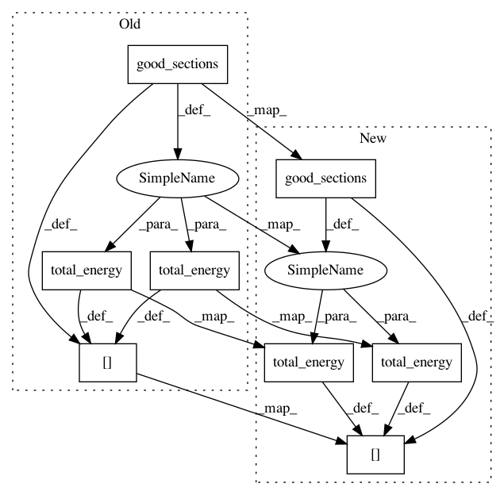

53c72d947033eb10fe8a41c1266c4ada8e996be3,nilmtk/metrics.py,,error_in_assigned_energy,#Any#Any#,31
Before Change
errors = {}
for meter in predictions.meters:
ground_truth_meter = ground_truth[meter.instance()]
sections = meter.good_sections()
ground_truth_energy = ground_truth_meter.total_energy(timeframes=sections)
predicted_energy = meter.total_energy(timeframes=sections)
errors[meter.instance()] = np.abs(predicted_energy - ground_truth_energy)
return errors
After Change
for meter in predictions.meters:
ground_truth_meter_identifier = meter.identifier._replace(dataset=ground_truth.dataset())
ground_truth_meter = ground_truth[ground_truth_meter_identifier]
sections = meter.good_sections().combined
ground_truth_energy = ground_truth_meter.total_energy(periods=sections).combined.values[0]
predicted_energy = meter.total_energy(periods=sections).combined.values[0]
errors[meter.instance()] = np.abs(predicted_energy - ground_truth_energy)
return errors
In pattern: SUPERPATTERN
Frequency: 3
Non-data size: 8
Instances
Project Name: nilmtk/nilmtk
Commit Name: 53c72d947033eb10fe8a41c1266c4ada8e996be3
Time: 2014-07-09
Author: jack-list@xlk.org.uk
File Name: nilmtk/metrics.py
Class Name:
Method Name: error_in_assigned_energy
Project Name: nilmtk/nilmtk
Commit Name: 61727706c00380c9c0dc964b55ba4847d4046334
Time: 2014-07-09
Author: jack-list@xlk.org.uk
File Name: nilmtk/metrics.py
Class Name:
Method Name: error_in_assigned_energy
Project Name: nilmtk/nilmtk
Commit Name: 737ebf034e6a73672c9f36e8f81461a06c238088
Time: 2014-07-09
Author: jack-list@xlk.org.uk
File Name: nilmtk/metrics.py
Class Name:
Method Name: error_in_assigned_energy